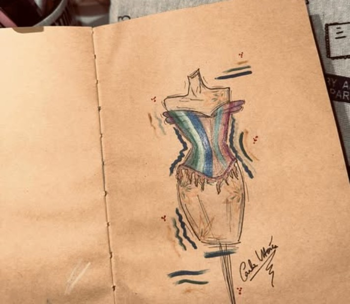
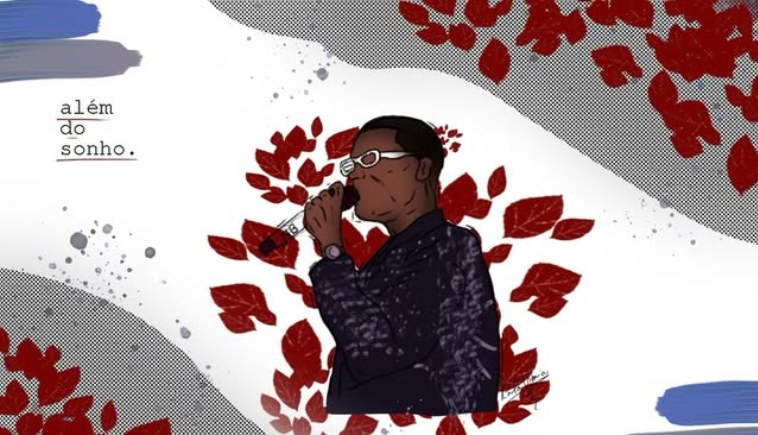
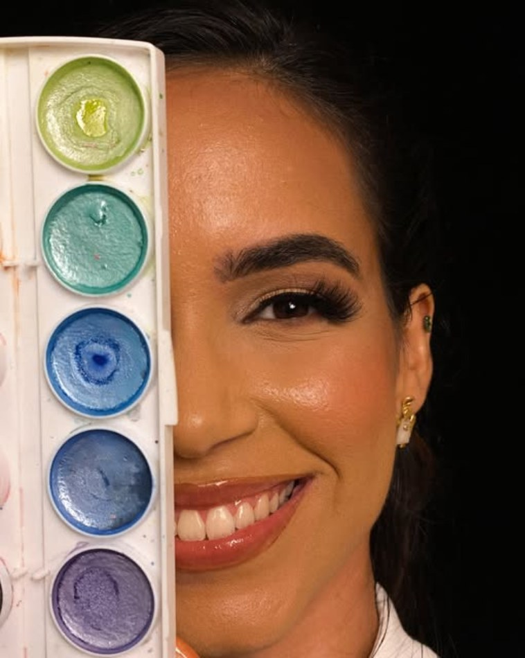

FEITO À MÃO[Nome da obra]
Pequena descrição da obra e da história por trás dela.
VER DETALHESQuadros personalizados inspirados em fotografias, paisagens e momentos especiais, transformados em obras únicas pelas mãos da artista.

FEITO À MÃOPequena descrição da obra e da história por trás dela.
VER DETALHES
ILUSTRAÇÃO DIGITALPequena descrição da obra e da história por trás dela.
VER DETALHESPequena descrição da obra e da história por trás dela.
VER DETALHESPequena descrição da obra e da história por trás dela.
VER DETALHESTrês passos entre a sua memória e a obra pronta.
Mande uma fotografia ou descreva a ideia que você quer ver na tela.
Escolha modalidade, técnica, tamanho e a data em que gostaria de receber.
A artista envia o orçamento, confirma o prazo e produz a sua obra.
Tem uma fotografia especial, uma paisagem inesquecível ou uma ideia que gostaria de transformar em arte? Vamos criar algo exclusivo para você.
PERSONALIZE SEU QUADRO[Depoimento real do cliente, com autorização para publicação.]
[Depoimento real do cliente, com autorização para publicação.]
[Depoimento real do cliente, com autorização para publicação.]

[Apresentação da artista: quem ela é, como começou a pintar e o que a inspira. Texto editável pelo painel administrativo.]
[Processo de criação e diferenciais do trabalho.]
CONHEÇA A ARTISTA